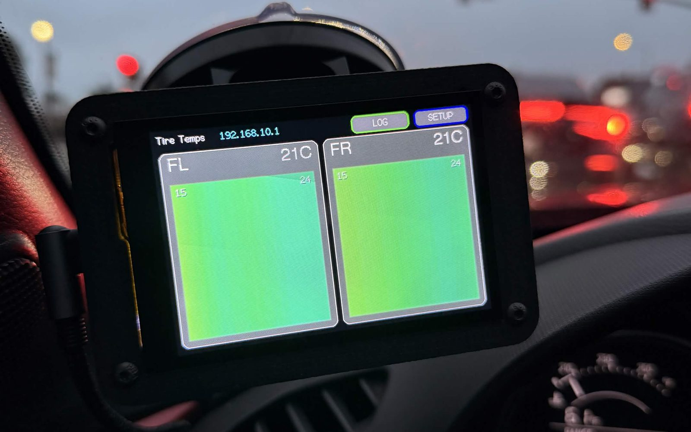

Tire Temperature Thermal Cameras
Live tire temperatures on a race car. Four thermal cameras stream to a cockpit screen, and the data is later matched to GPS laps.

- Status
- Active
- Code
- About 6,600 lines
- Parts
- App, firmware, analysis tool
- Hardware
- ESP32-S3, thermal cameras
Overview
TireNet shows live tire temperatures on a race car. Four thermal cameras stream to a cockpit screen, and the data is later matched to GPS laps. I wrote three parts, about 6,600 lines:
- Provisioning appPython. Flashes a camera and its WiFi settings in one click.
- Head-unit firmwareArduino C++. Runs the WiFi network, the dashboard and session logging.
- Track analysis toolPython. Merges GPS and temperature logs into per-lap heat maps.
The system on the car
Wheel-well camera
One thermal camera is mounted in each wheel well, aimed at the tire tread.
Central power hub
All four cameras plug into one central hub for power.
Cockpit screen
A 480×320 touchscreen with a live temperature card for each tire and a LOG button to record a session.
Web UI graphs
A phone joins the screen's WiFi to see graphs of live and recorded runs. Each run can be saved as a single page and viewed later offline.
Architecture
The head unit is the hub. It runs the WiFi network the cameras join, and the phone and analysis tools only ever talk to it.
Provisioning app
Every camera runs the same firmware image. Instead of compiling per camera, the app writes each camera's WiFi settings to a small separate storage partition. Buyers need no developer tools, the firmware's SHA-256 never changes, and changing WiFi rewrites only that partition.
- One clickFinds the storage location from the chip's partition table, writes the firmware, writes the settings, then reads them back to confirm. A failed write would otherwise look normal.
- PackagingGUI and command line share one class. It installs its own dependencies and also ships as a single executable.
Head-unit firmware
The touchscreen pulls frames from all four cameras over TCP and serves a web UI to phones. Each feature below fixed a problem found in testing.
- Redraws left visible lines on screenRedraw a card only when its displayed reading changes. Redraws fell from 780 a minute to 1.
- Cameras drop outEscalating recovery: resend, reconnect, mark stale, then reset the camera.
- Power cuts lost whole runsEach sample is written to flash as it is recorded.
- Crowded track-day WiFiPicks the quietest channel at boot.
Track analysis
The GPS unit and the screen record separately, so no laptop rides in the car. Afterwards the tool:
- Reads the RaceBoxOver BLE, using its binary protocol implemented from the vendor spec.
- Lines up the logsMatches the two logs by time, correcting time-zone offsets automatically.
- Splits lapsCuts a lap wherever the car crosses a start/finish line, and draws a heat map per lap.
Reverse engineering
The cameras run closed vendor firmware. By disassembling it, I found the storage keys it reads WiFi settings from, so no custom camera build was needed. I confirmed the result on real hardware: a full flash read back byte-for-byte.
Tech stack
- Embedded
- ESP32-S3ESP-IDFArduino LovyanGFXLittleFSTCP
- Desktop tools
- PythonTkinterPyInstaller esptoolarduino-cli
- Data & protocols
- BLEUBXHTTPMatplotlib